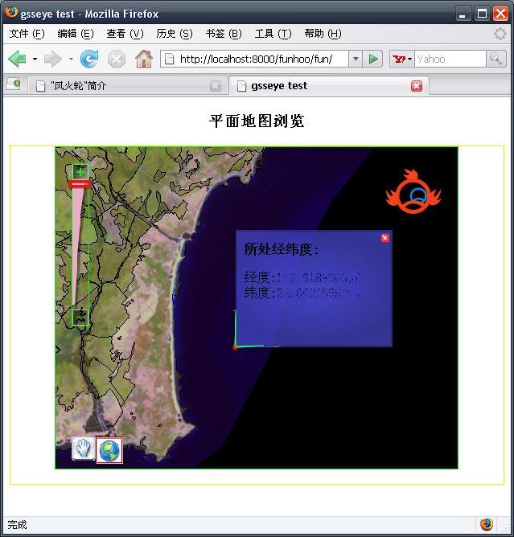
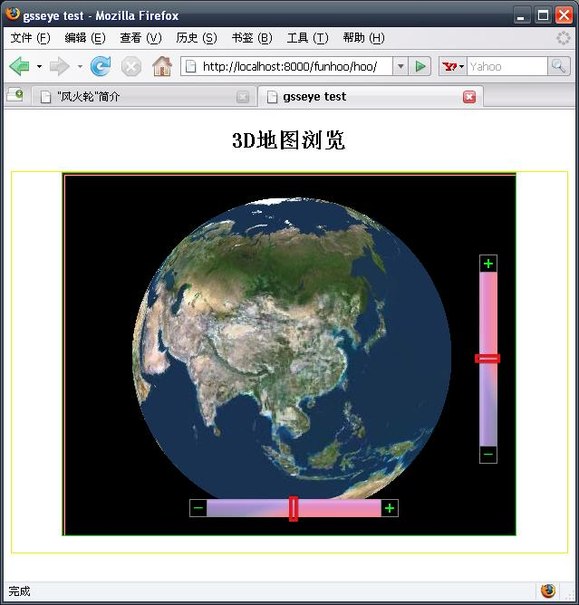

"风火轮"是一个类似google map和网络版google earth的webgis。采用Django和Ajax写成。
“风火轮”分成两个部分。一个暂叫fun，另一个叫hoo。念起来就像“风”“火”两字。希望其“风风火火闯九州”吧……呵呵。从形式上看一个是基于2d的，一个是基于3d的。两个部分相辅相济，互相补充。如同哪吒脚下的那对风火轮。就姑且把两个部分分别叫做“风轮”和“火轮”吧!
需要说明的是：现在风火轮暂时只支持FireFox浏览器。IE等其他浏览器总是会出现莫名的问题。所以您要体验风火轮的风火，你需要安装firefox。另外风火轮使用了几个js脚本库，使用MochiKit作为ajax库。使用wz_jsgraphics作为火轮的简单图形绘制库。(其实也就只做个效果，不用也罢)。ajax通讯选用的txt方式而不是xml，json等。因为那些通讯需要额外安装其他python库。库还是少用一个是一个吧。我现在用的已经够多了-_-!。
“风火轮”只是我做来玩的，暂时只是做个样子，给大家个印象罢了。不漂亮且功能不多。且整个九形的核心搜索功能正在实现当中，所以风火轮并没有googlemap等基本的搜索功能。以后会慢慢加强的。而且现在风火轮是分开的两个部分，但是看起来将来似乎有整合的可能。
风火轮的安装请看这里。
下面是风火轮的两张截图:
这张是风轮:

这张是火轮:

| geosings, 风火轮简介 | 返回主目录 |